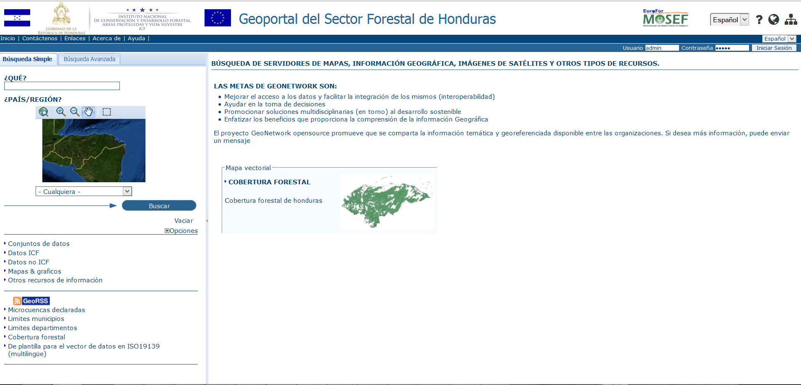

La aplicación Catalogo de Metadatos permite la visualización, búsqueda e inserción de los metadatos
El acceso a la aplicación Catalogo de Metadatos es posible haciendo clic sobre el relativo botón, presente en el grupo de herramientas Accesibilidad al Sistema
Botón Catalogo de Metadatos
La interfaz del Catálogo de Metadatos se presenta como en la figura en seguida:

Fig.2 –Aplicación Catalogo de Metadatos
La aplicación Catalogo de Metadatos presenta una ventana principal con diversos grupos de componentes: